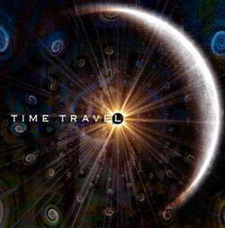

Time Travel
Time Travel

Ironically, most discussions about time travel or time in general are a waste of time. Very few people have the time to sit around and speculate about what happened a million years ago or what will happen a million years from now. Carbon dating dinosaurs and speculations about time machines have very little practical value in our everyday lives. If a meteor is going to fall to earth and alter the course of time, there really
isn't much we can do about it.
Since the beginning of time an ironic place to begin humans have fantasized about time travel. Time travel is not really about a machine that can travel through time, not yet, anyway. The machine that can travel through time is not an assemblage of parts that work together to perform a function. Until such a
machine if ever is invented, the real time machine is the imagination.
Time travel into the future is about the ability to use the imagination to negotiate uncertainty. Its about the capacity of free will to make decisions and choices about the future without having all the facts. After
that we can only hope.
Most importantly, time travel is a test of our hopes and fears. Fear can free or paralyze you. Fear holds you in a state of suspended animation. Like in a suspense movie, you
don't know what's around the corner until you get around the corner. What was that strange sound in the attic? The only way to answer that question is to go up into the attic and investigate.
But fear of the future is a true test of the virtue of patience. In a sense, finding out
what's around the corner or the strange noise in the attic does involve time travel. It takes a certain amount of time to investigate and as you are doing so, time is moving
forward even though suspense has a way of making time stand still.
Hope can be a form of learned helplessness and hope can be the engine that drives us to overcome insurmountable obstacles.
Dreams that is, dreams we have about our futures, not the dreams we experience while we
sleep are the expression of hope. We hope our dreams come true. We also fear they wont.
The future is predictable but within certain limits. Its a good bet the sun will rise
tomorrow based on a track record of a seemingly endless series of days and nights come and gone.
We've documented the past through writing, pictures, drawings, recordings, film and computers. We can prove the past existed. Its the parts we
haven't documented that become a matter of speculation. To really know the past, we would have to experience it in real time.
The memory is the part of the imagination that can travel into the past. The memory is like a movie of our lives. Unfortunately, to playback the full record of our lives would take as much time as it took to
record or remember. Traveling back through the full extent of our lives isn't very useful. Its much better to travel back to poignant
times the major events, or simply the events we want to remember.
Actually, it depends on why you would want to travel back to a certain time and place. Everyone has parts of their lives they wish never happened. And when life
doesn't go according to plan, wed like to go back and make it so, or remove the obstacles that impeded our plans.
Its important to remember that traveling back into time also means traveling through space, unless we happen to be in the place we wish to get a past glimpse of. Rarely do we stay in any one place long enough to have a history worth visiting.
After all, how long did you sit in a particular chair or sleep in a particular bed on a particular
night? Painfully, it is as though much of the time we live is dead time best forgotten and certainly not worth reliving.
Most fantasies about time travel involve a combination of time-lapse photography and space travel. We pick a spot and a time and go
there like setting coordinates. We also have a tendency to pick times and places we never were before. Traveling in
time to the past, that is would be similar to visiting an exhibit on time in a museum. You
wouldn't spend more than a few hours at the museum and each individual exhibit is good for 10-15 minutes
each plus time spent for lunch.
When time travel involves our own lives, it takes the form of two possibilities. The first is that our own being travels back. Suddenly you find yourself engaged in a conversation you had 10 years ago, but now its you from the future, not you stuck in that particular time and place. This allows control over what you said in that conversation. Things could get pretty hectic if you find yourself with the need to keep going back every few minutes because you just cant seem to get the conversation right.
Ironically, to save time, it would be best to plan precisely what it is you want to say in that conversation, then go back and say it. But to do so, means knowing the outcome of what you say.
You'd either have to be able to see the outcome or it would become a matter of trial and error. It might be better to just forget and move on.
The second possibility already alluded to is the ability to see the past as if you were an observer traveling in a thin glass bubble. There would be you in the bubble and you in the past. In
essence, you would become two people. But traveling as a tourist isn't very useful in terms of changing the past, which ultimately alters the future. It might be useful in terms of
revisiting a time you have little memory of, and taking that information back to the
future or back to the time from which you left.
Now we have a new paradox coming back to the time from which you left. First, it took a certain amount of time to travel backwards. So even though you traveled back into time, time still moved forward. You now need the exact coordinates of the time you left in order to return to that time. If you miss it by even a few seconds, you will either find you
haven't made the decision to travel yet, or you've already made the decision. Either way,
you'll have to make some fine adjustments.
Many time travel fantasies do not involve our own lives. Ever since we opened our first history books,
we've been bombarded with a series of times and places from the past that have become an endless source of awe and mystery. Time travel offers a solution to dozens of mysteries humans have been trying to solve in this century and centuries before. Who killed John F. Kennedy? Who built the pyramids or Stonehenge? What does a dinosaur really look like?
But really, aren't such excursions into the past really fantasies in disguise? Knowing who killed Kennedy wont bring him back to life. Then again, it might reveal the truth about one or more conspiracy theories and perhaps lead to indictments40-50 years later. There might be some practical use in solving murder mysteries. But what good does it do for us to roam around in ancient Egyptian pyramids or hide in the bushes avoiding a Tyrannosaurus
hex?
H.G. Wells published the Time Machine in 1895. With the car, airplane and other modes of transportation still in their infancy, the notion of traveling hundreds of thousands of years into the future must have seemed nothing short of insane. Its a wonder Wells was never put in jail, or burned at the stake, as they did with heretics and witches a few centuries earlier.
There was a time the earth was flat. Once we believed only birds could fly. Once we even believed the Sun, the Sky, a bolt of lightning and a whacky guy with wings and a bow and arrow were Gods. Someone always seems to come along and prove the impossible is possible. Just about every no got turned into a yes.
Well, humans certainly did travel through time. Rocks turned into swords. Swords turned into M-16 assault rifles. The black plague turned into the AIDS epidemic. Communism gave way to democracy. Its been quite a journey from our Neanderthal origins to men dressed in tuxedos and women in $100,000 gowns, stepping up to receive Oscar Awards.
We flew through the Industrial Age into the Digital Age so fast no one remembers the cotton gin. And it only took 100 years, give or take a few. In the new Millennium, after cloning sheep, the Internet and routine triple bypass surgery, much of what was once sci-fi before and during the turn of the 20th century is now a reality. And were just getting warmed up.
Nanotechnology, artificial intelligence, transhumanism, genetic engineering, space exploration and colonization, virtual
reality these are the new sciences. Already we've got robots fighting wars and taking pictures of the surface of Mars.
We've got biospheres in space and corn made in laboratories. We've smashed atoms into quarks. Put on a pair of goggles and were in our own movies. With the right cream, implant and a touch of laser surgery,
we've beaten the rap on survival of the fittest. And to think we once thought eyeglasses were somehow the beginnings of finally achieving immortality!
Numerous science fiction writers and filmmakers through the decades have given us 100s if not 1000s of sci-fi stories. From the silly to serious, some of these titles include: Abbot and Costello Go To Mars, Star Wars, Star Trek, Superman, The Hitchhikers Guide to the Galaxy, Sphere, Abyss,
Star gate, Buffy the Vampire Slayer, A.I.: Artificial Intelligence, Armageddon, The Six Million Dollar Man, Attack of the 50 Foot Woman, The Terminator, Lord of the Rings, Harry Potter, Alien and so many more impossible to list.
We've
beamed or materialized ourselves across space and time. We've left our bodies and been experimented on in alien spaceships.
We've
fought intergalactic battles with robots the size of skyscrapers. We've
journeyed through our blood stream in tiny spacecraft that gives new meaning to space.
And just around the corner is fantasy. The lines between science fiction, fantasy and horror are thin. Tarot cards, astrology charts, crystal balls, parapsychology, astral physics, goblins, yellow brick roads, Mad Hatters, ghosts, werewolves, vampires and fairies entertain our imaginations equally as much as spaceships, robots and aliens. Sprinkle in a little magic, a few cartoon characters and half dozen or so talking animals, and
we've got some real problems when it comes to telling our children what reality is.
So where do we go from here? Well, the funny thing is we still haven't invented a time machine.
According to some scientists there is speculations of 2005 that time travel is possible.
About the TIME series
Of the four dimensions that currently define our universe, TIME remains the most puzzling of all. We can measure it, even to a trillionth of a nanosecond, but, we still don't know what it is and in particular, if we can travel through it like we can travel through space. Einstein's theories of Special and General Relativity set the stage for the cosmological phenomena of space-time. Civil Time--the time we use to set our clocks--is governed by astoundingly accurate atomic clocks. But when scientists start talking about black holes, wormholes, electromagnetic radiation and the search for the illusive "graviton," TIME takes on an entirely different meaning in Cosmological terms.
How does time affect the Future of Human Evolution? Well, one way to draw focus to the significance of TIME in our lives is to imagine this: What would happen if suddenly all the clocks stopped? As if that's not enough to warrant a double take at the clock on the wall, imagine if scientists actually create wormholes through particle accelerators allowing us to travel into the past or future?
Below are links to all of the articles in the TIME series.
:: Characters In Time
Our perceptions of TIME are very much based on who we are. Even though the hands of a clock seem to move at the same rate, TIME moves differently for a prisoner on death row compared to a CEO about to close a deal on a major merger, or a 9-year old getting ready for her 10th birthday. We relate to each other depending on how we use time...or don't use it. But is time simply something to use? For some, TIME is something to enjoy. For others, it's something to fill.
:: Perceptions of Day and Night
The Day is good the Night is evil. The Night means romance the Day means work. What Day and Night mean to astronomers is entirely different than how various cultures and societies perceive the meaning of Day and Night.
:: What Is Time?
By dictionary definition, TIME is the sequential arrangement of all events, or the interval between two events in such a sequence. TIME is much more than that. TIME regulates our lives. Ancient observers gave us sundials, calendars and crude clocks based on the rotational and orbital behavior of the sun, moon, earth and other celestial bodies. Modern scientists gave us UTC while Einstein defined TIME as the 4th dimension, giving astronomers and cosmologists the phenomenon of space-time to ponder. There is biological time, astronomical time and civil time.
:: Calendars
The Gregorian Calendar is currently the universal civil calendar. But there are many other calendars, ancient and modern, influenced not only by celestial body rotations and orbits, but also by politics and religion.
:: Clocks
Does anybody really know what time it is? From ancient sun clocks to modern quartz clocks, the answer changes with TIME.
:: Atomic Clocks
Thanks to the United States Naval Observatory and other international organizations, 59 ATOMIC CLOCKS give us accurate TIME down to the fraction of a nanosecond. Is this important?
:: Time Travel
Since ancient times, humankind has longed to find a way to travel through time. But until a machine is built for such a purpose, the real time machine is our imagination.
:: Time Travel - Scientific Explanations
No matter what theories are proposed or dismissed, scientists cannot rule out that time travel is possible. But, instead of building a machine, per se, theorists are more focused on such things as wormholes, time dilation, time reversal invariance, electromagnetic radiation, gravity and the overall shape of the universe in terms of discovering ways to travel through time.
^ Top ^